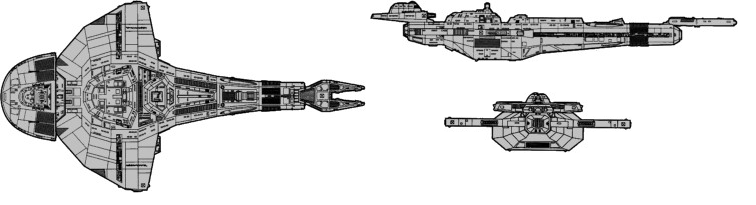

Galor-class Destroyer (CU)

Battle Stats
Engines and Superstructure
Total Power Units - 100 (Warp Engines - 2x40, Impulse Engines - 20)
MPR - 5/1
Superstructure - 32
Maximum Warp - 2
Industry Points to Build - 5
Beam Weapons (Disruptors)
Max Power - 8
Firing Chart - U
Arcs - 4F, 2F/P, 2F/S, 2A
Bonuses - +3(1-10) +2(11-17) +1(18-24)
Deflector Shields
Max Shield Power - 15
SPR - 1/4